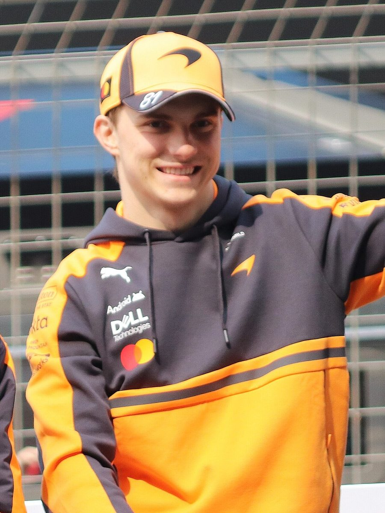

维斯塔潘夺得F1拉斯维加斯大奖赛冠军，拉塞尔撞墙引发赛后口水战
历经50圈跌宕起伏的激战与梅赛德斯末段内斗，红牛四届世界冠军力压迈凯伦双雄诺里斯与皮亚斯特里问鼎。

赛况速递
在内华达的璀璨灯光之下，马克斯·维斯塔潘（Max Verstappen）顶住了严酷的尾流缠斗，率先冲过终点线，力压迈凯伦车队搭档兰多·诺里斯（Lando Norris）和奥斯卡·皮亚斯特里（Oscar Piastri），斩获拉斯维加斯大奖赛冠军。由于梅赛德斯车手安德烈亚·基米·安东内利（Andrea Kimi Antonelli）因更换动力单元部件被罚退5位起跑，这位红牛车队的四届世界冠军得以从杆位发车。
在整整50圈的比赛中，维斯塔潘与梅赛德斯的乔治·拉塞尔（George Russell）展开了多次领跑位置的攻防互换。然而在比赛仅剩两圈时，拉塞尔在尝试超越安东内利争夺次席的过程中轮胎锁死，直接撞上护墙。事故导致拉塞尔名次跌落至第九，而安东内利在倒数第二圈滑落至第四，诺里斯与皮亚斯特里借机双双登上领奖台，为迈凯伦锁定双前三。

焦点热议
赛后的舆论焦点迅速转向了维斯塔潘与拉塞尔之间升级的恩怨。在周六的第三次自由练习赛中，两人在进入14号弯时发生轮对轮擦碰，维斯塔潘当时做出手势发泄不满，并因此领到赛会正式训诫。拉塞尔赛后随即向媒体直言，维斯塔潘“总表现得高人一等”，必须要予以还击。
在赛后新闻发布会上，当被问及拉塞尔最后阶段的撞墙事故时，维斯塔潘直言看到那一幕后“整个人都舒坦了”，并将其称作“因果报应（karma）”，引得一旁的诺里斯和皮亚斯特里哄堂大笑。红牛官方社交账号也迅速跟进，晒出维斯塔潘登上领奖台的照片，并配文：“高人一等”。此外，法拉利车队内部同样燃起战火，夏尔·勒克莱尔（Charles Leclerc）因顶翻队友刘易斯·汉密尔顿（Lewis Hamilton）被赛会处以10秒罚时。
关键数据与事实

- 0.639秒：维斯塔潘在方格旗挥舞时领先第二名诺里斯的微弱优势。
- 35次：拉斯维加斯大道赛道50圈较量中出现的领跑位置交替总次数。
- 提升14个名次：皮亚斯特里从第17位发车一路狂飙，最终杀至第三完赛。
- 75胜：内华达折桂后，维斯塔潘职业生涯的F1分站冠军总数。
- 402分对304分：车手积分榜前两位的差距，安东内利继续领跑第二名的维斯塔潘。
后续走势
2026赛季F1锦标赛即将迎来最后两站争夺。尽管安东内利已在11月早些时候提前加冕车手总冠军，但拉斯维加斯站的胜利让维斯塔潘以304分坐稳车手积分榜次席，扩大了对法拉利车手汉密尔顿（267分）的领先优势，而拉塞尔与诺里斯则同积264分并列。